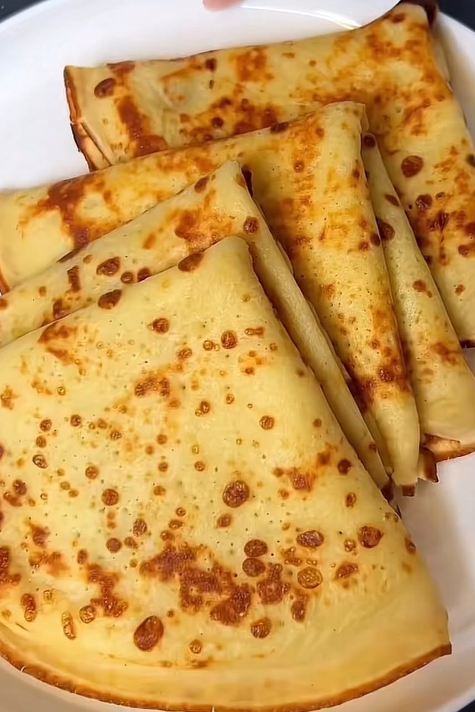
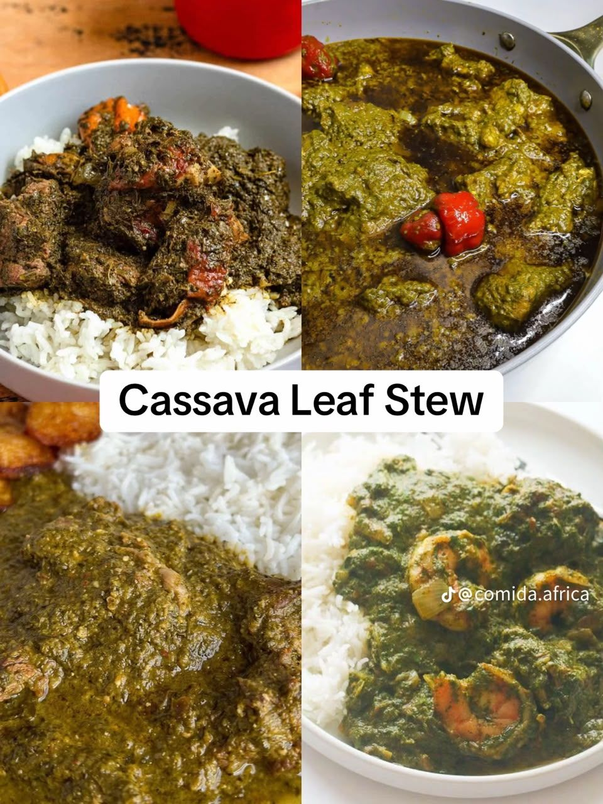
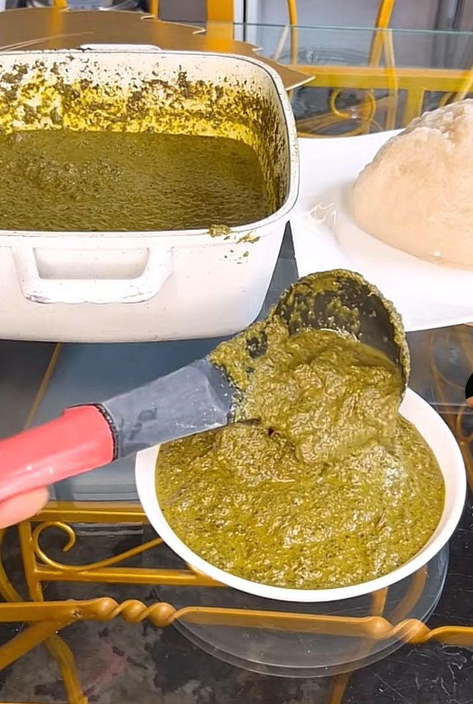

Injera
Injera is a soft, sour, spongy flatbread made from fermented teff flour, central to Ethiopian and Eritrean meals.
Culinary region
East African cooking ranges from the fermented breads of the highlands to the leafy stews of the Great Lakes and the spiced rice of the Swahili coast.

Flavor comes from berbere, cardamom, cloves and cinnamon on the coast.

Injera is a soft, sour, spongy flatbread made from fermented teff flour, central to Ethiopian and Eritrean meals.

Isombe is a beloved Rwandan dish of pounded cassava leaves slowly simmered with onion, garlic, eggplant and peanut.